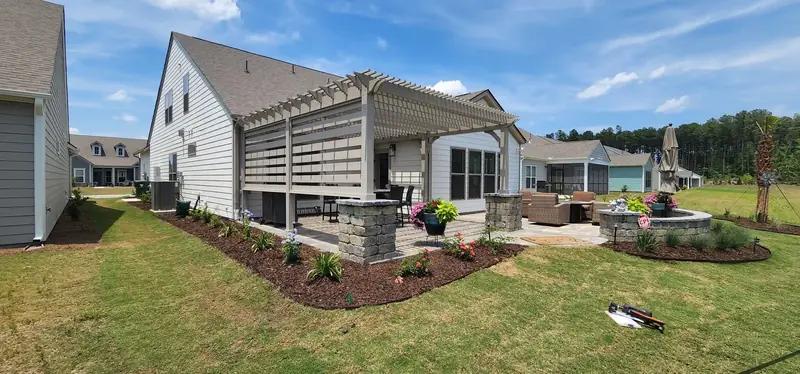
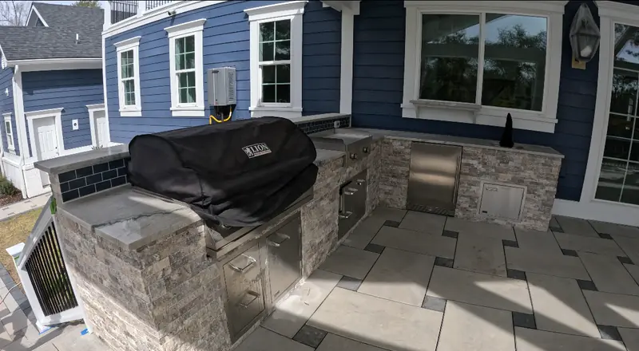
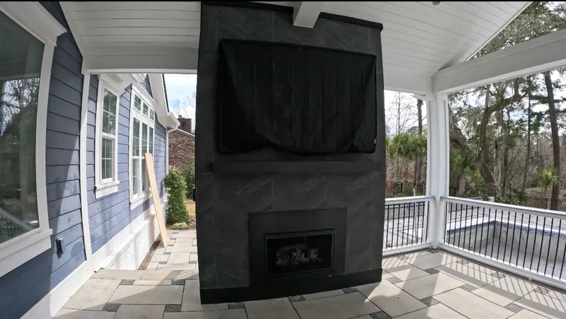
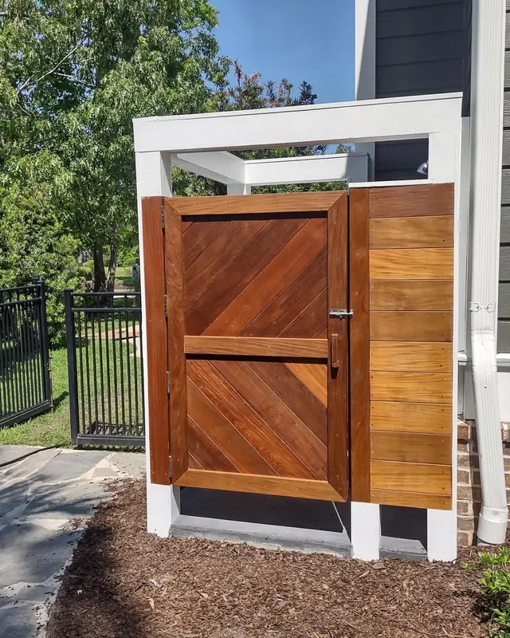

Outdoor Structures in Charleston, SC

Outdoor Structures The Part of the Yard You Can Use in the Rain
A structure is what turns a backyard into a room. Shade in July, cover in a thunderstorm, somewhere to put a TV, a kitchen and a fireplace so they survive being outside — that is what people are really buying.
We design and build them ourselves, and the gas, electrical and plumbing are handled by our own team, along with the permits. That matters most on this group of services: a pavilion with a kitchen and a fireplace is four trades in one structure, and the seams between trades are where projects go wrong.
Zach Cramer is our licensed residential builder. He and Doug look at every project themselves before it is quoted.
Pergola, Pavilion or Gazebo?
The words get used loosely. Here is how we use them.
- Pergola — traditionally an open structure with a flat, slatted or gently sloped roof. We also build them closed in, with a solid roof, finished ceiling, electrical and post and beam trim, and it is still a pergola. The least expensive of the three, which is why most clients choose one.
- Pavilion — can have a flat or shed roof as well, but the options expand to gable, hip and other pitched forms. Open-sided or partially enclosed, and generally larger.
- Gazebo — the traditional one people picture: freestanding, usually round or octagonal, with a peaked roof and often a railing. A gazebo reads as a garden feature standing on its own, where a pergola or pavilion is built to extend how you use the house.
Deciding between the first two is the most common question we get, and it is covered properly in our pergola vs pavilion guide.
What We Build

Pergolas
$10,000 to $30,000. Open or closed in, with trim, ceiling and electrical.
Explore →
Pavilions
$30,000 to $90,000+. Gable and hip roofs, larger spans, full finishes.
Explore →
Outdoor Kitchens
$8,000 to $20,000+. Appliances, counters and the details that matter later.
Explore →
Outdoor Fireplaces
Kits from $8,000, custom $20,000+, with a blower fitted either way.
Explore →
Outdoor Showers
$6,000 to $15,000, hot and cold, in pressure-treated or sapele.
Explore →
What It Costs, and How Long It Takes
| Pergola | $10,000 – $30,000 |
|---|---|
| Pavilion | $30,000 – $90,000+ |
| Permitting | 4 – 6 weeks before work starts |
| Pergola build | 1 – 3 weeks |
| Pavilion build | 6 – 8 weeks |
Structures usually begin within 1 to 2 months of signing, depending on how busy we are and whether permitting or HOA approval is still running.
Nearly every roofed structure needs a permit, though some towns exempt smaller structures under a certain square footage — Isle of Palms, for example. An outdoor shower does not need one. We handle permitting as part of the build, and prepare and submit HOA applications too.
What Holds It Up Is What You Never See
The part of a structure that decides whether it is still straight in twenty years is under the ground. Two things matter here, and they are the first things a cheap quote leaves out.
- Continuous concrete footings. A footing runs below the frost and soft topsoil and spreads the weight of a post over a wide enough area that it cannot sink. Running them continuously under a structure, rather than pouring an isolated pad under each post, ties the whole thing together so it settles as one piece — or not at all.
- Monolithic slabs. A monolithic slab is poured in a single piece with its footings and floor together, so there are no cold joints where two pours meet and nothing for water to work into. It is a stiffer, stronger base than a slab poured on top of separate footings, and on sandy Lowcountry soil that stiffness is what keeps a structure from moving.
None of this shows in a photograph, which is exactly why it is worth asking about. When quotes come back at different numbers, the footing detail is usually part of the difference.
If a Quote Comes In Cheaper
It usually means the other quote is for something different: cheaper materials, less trim, or no trim at all. Trim and finish detail are most of what separates a structure that looks built from one that looks assembled, and they are the easiest things to leave out of a number.
If your budget is fixed, say so early. We can design within your budget, and we would rather stage a project over a couple of years than build something you will not love. The thing we push back on is rushing.
How a Project Runs
- Free consultation at your home, starting with a rough budget, because most people do not know what these things cost.
- Design — drawings, with 3D renderings optional at additional cost, matched to the architecture of the house.
- Permits and HOA, prepared and submitted by us. Allow 4 to 6 weeks.
- Build, with our own gas, electrical and plumbing crews.
- The yard around it: patio, planting and lighting finished as part of the same job.
Areas We Serve
Cramers Landscaping proudly serves:Projects We’ve Built
Real jobs, with the story of how each one came together.


Frequently Asked Questions
What is the difference between a pergola and a pavilion?
A pergola is traditionally an open structure with a flat, slatted or gently sloped roof, though we also build them closed in with a solid roof, finished ceiling and electrical, and it is still a pergola. A pavilion can have a flat or shed roof too, but its options expand to gable, hip and other pitched forms, and it is generally larger. Pergolas are the least expensive of the two.
How much does an outdoor structure cost?
Pergolas run $10,000 to $30,000 and pavilions $30,000 to $90,000 or more. Outdoor kitchens are $8,000 to $20,000+, fireplaces start at $8,000 for a kit, and outdoor showers are $6,000 to $15,000.
How long does it take to build?
A pergola takes one to three weeks and a pavilion six to eight, after four to six weeks for permitting. Projects usually start within one to two months of signing.
Do you handle the permits?
Yes. Nearly every roofed structure needs one, though some towns exempt smaller structures under a certain square footage, such as Isle of Palms, and an outdoor shower does not need one at all. We handle permitting as part of the build and will prepare and submit HOA applications as well.
Do you subcontract the gas, electrical and plumbing?
No. Gas, electrical and plumbing are handled by our own team, along with the permits.
Another company quoted me less. Why?
Usually because they are quoting something different: cheaper materials, less trim, or no trim. Tell us your budget and we will design within it rather than leaving the finish detail out of the number.
Request Your Free Consultation
Request A Quote
Ready to add comfort, elegance, and value to your outdoor space? Contact Cramers Landscaping to begin your custom outdoor structure project. From pergolas to patios and fencing to trellises, we’re Charleston’s trusted name in functional landscape architecture.
Get started today with a consultation.